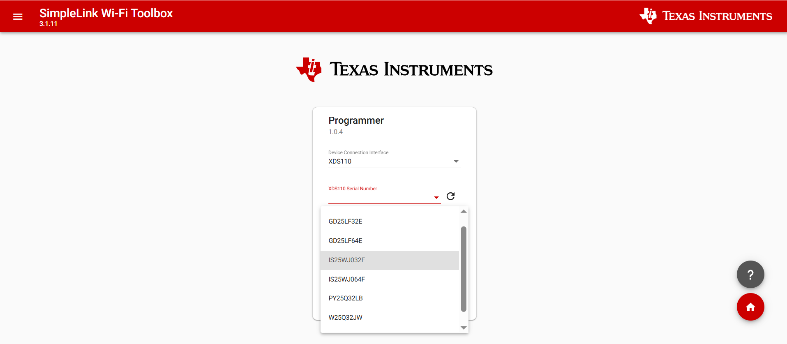
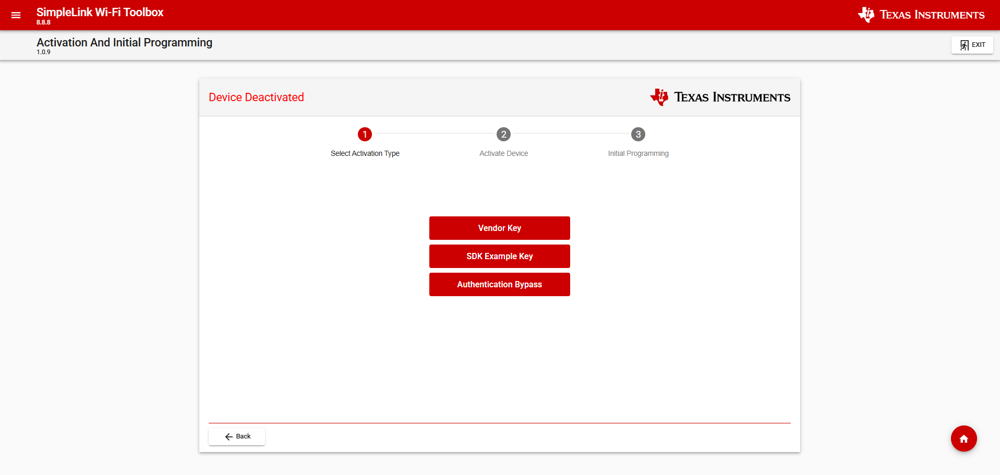
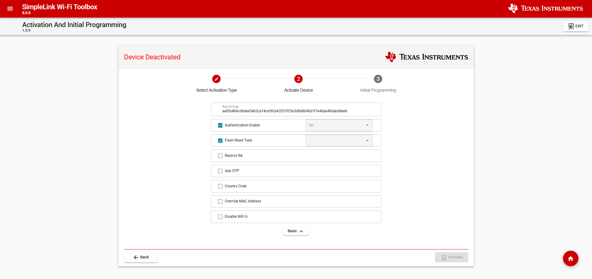
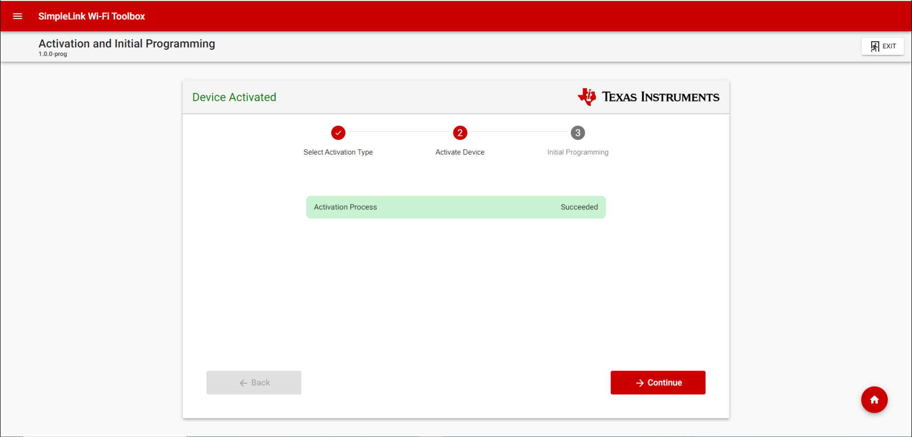
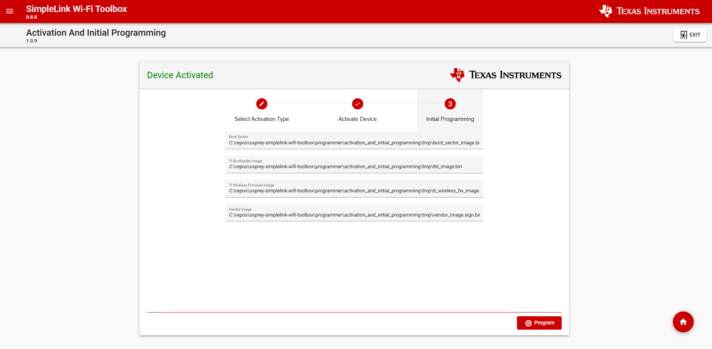
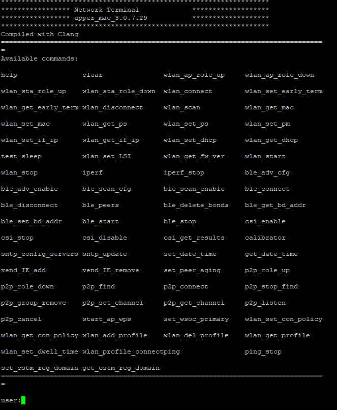

Getting Started with the SimpleLink CC35xx¶
The SimpleLink Wi-Fi SDK delivers components that enable engineers to develop applications on the Texas Instruments SimpleLink CC35xx family of wireless microcontroller (MCUs). This powerful software toolkit provides a cohesive and consistent software experience for all SimpleLink CC35xx wireless MCU users by packaging essential software components, such as a Bluetooth® Low Energy (Bluetooth LE) protocol stack supporting Bluetooth 5.4, and Wi-Fi 6 networking stack based on LwIP (https://savannah.nongnu.org/projects/lwip/), as well as the FreeRTOS kernel and TI Drivers in one easy-to-use software package along with example applications and exhaustive documentation.
Prerequisites¶
The user is expected to have the following:
- CC35x1E LaunchPad
- XDS110 Debugger LP-XDS110ET
- SimpleLink Wi-Fi SDK
- CCS 20.4.0
- Sysconfig 1.26.0
- Putty or any other Serial Terminal Application
Attention
Please note that CCS must be installed prior to moving on to the next steps. CCS is available here: Code Composer Studio .
SDK - Download and Installation¶
Installing the SDK¶
This section covers the required settings for a SimpleLink Wi-Fi SDK installation. The SimpleLink Wi-Fi SDK contains all of the Documentation, Example, Kernel, Driver Sources, and tools required to get up and running with the SimpleLink CC35xx family of devices.
- Download the SimpleLink Wi-Fi SDK from the SDK Product Page.
- Install to the default installation directory.
Activation and Initial Programming¶
This section will cover the activation and initial programming of the SimpleLink CC35xx.
Attention
Please note that throughout the activation and initial programming the window should NOT be refreshed at any point. Additionally, the activation and initial programming process should only be done ONCE for each new CC35xx.
Activation¶
When the device is first received it will be in an ‘OPEN’ security state , which will not allow you to do much with until it has gone through the activation process. The activation process will change the device ownership by flipping the security state to ‘deployed’, and add customer credentials.
For the following steps you will need to have the CC35x1E LaunchPad connected to the LP-XDS110ET and to the PC.
Attention
Make sure that both LP-XDS110ET and CC35x1E LaunchPad are connected to the same PC through two different USB-C ports.
- Start the Toolbox application that is downloaded along the SimpleLink Wi-Fi SDK by navigating to the root of the simplelink_wifi_toolbox_”platform”_x_x_x and run the “simplelink-wifi-toolbox.exe”.
Executing the Toolbox application will open the default browser at the Toolbox home page. Once in the home page click on the Programmer tool.

Toolbox Application Home Page
- This will open a windows that will allow you to see any XDS connected device and select onbnoard flash.
Select the connected XDS110 device from a drop-down list of XDS-devices connected to the PC.

XDS110 Select Page
Note
If you are using a Revision A Launchpad, select IS25WJ064F. For Launchpads Revision E4 or earlier revisions, select IS25WJ032F

Flash Device Select Page
- The following step will require you to select the activation method.
There are 3 options for activating the device:
- Vendor Key - Use custom Vendor keys
- SDK Example Key - Emulate the full vendor operation using an emulation key (TI-provided ‘debug’ key).
c. Authentication Bypass - Enable the vendor to load and execute unauthenticated images.
However for the purposes of this Quickstart User’s Guide please select the SDK example key (if wanting to use a Vendor Key please refer to the programmer guide in the Wifi Toolbox User guide)

Activation Type Page
- Since the SDK example key was selected the “Root of Trust” key will be pre-selected.
The key is not pre-selected if the Authentication Bypass activation method is chosen. Confirm the “Root of Trust” key is selected and activate the CC35xx.

Activation Page
- At the end of the activation process the tool will report a summary for review.
In case of failed RoT fuse-programming, the activation/programming process will be halted.

Review Page
{kind=link}
{kind=link}
{kind=link}
{kind=link}
Initial Programming¶
Once the activation process has concluded, the Initial Programming process will start automatically in the next window. During this process you will download an example image and Connectivity Core image to the CC35xx in addition to flash configuration. As a reminder, please be sure not to refresh the page during this process.
- Image selectionBoot Sector - Flash partition, calibration, and flash high-speed configuration.
- TI Bootloader - RAM-bootloader (2nd stage BL provided by TI).
- TI Wifi Firmware - WiFi Servicepack
- Vendor Demo Image - for FCS versions the image will program Network Terminal.

Initial Programming Page
Press the program button to begin Initial Programming. Once programmed you will be met with the following screen.

Initial Programming Page
Example Application (Network Terminal)¶
As part of the initial programming process above a precompiled network terminal example has been programmed as the vendor image. In order to use the device and evaluate using the demo, follow the steps below:
- Determine which COM port the LP-XDS110ET is connected to. On Windows this can be done by referencing Ports section in Device Manager. Two XDS devices will show, for a serial connection the COM port that is relevant belongs to the device that is labeled “Application/User UART”.
- Open a serial terminal application such as ‘Putty’ or ‘Tera Term’.
- Configure the connection as Serial with BAUD of 115200 and the COM port found in step 1.
- Reset the CC35x1E LaunchPad and LP-XDS110ET.
- The Network Terminal example screen should show up, providing you with a command-line interface that enables running basic operations. The initial bringup and/or typing
helpwill show this menu:
Network Terminal Help Screen
{kind=link}
This allows for verification that the device has been flashed and is working. For further development please refer to the SimpleLink Wireless MCU CC35xx Overview section.